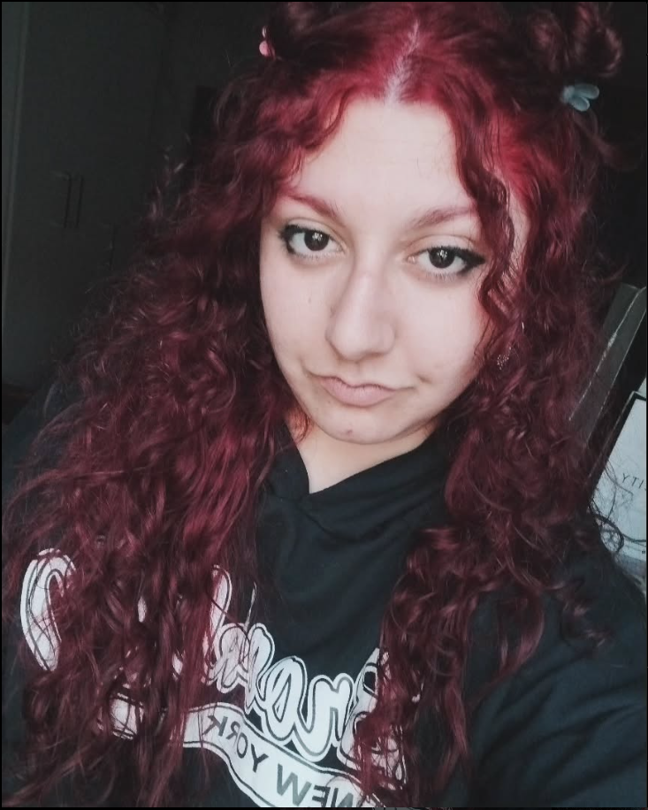

Sobre mí

Tengo casi 28 años, me encuentro estudiando Diseño y Comunicación Visual en la Universidad Nacional de Lanus. Me gustan los trabajos con muchos colores, el estilo kawaii y la cultura asiática. Creo que una caracteristica sobre mí, es que me gusta más dibujar y hacer ilustraciones ya que el diseño es algo que aprendo día a día. Me gusta ser detallista, creativa y proactiva. Actualmente me encuentro trabajando en silencio mi libro ilustrado.
Mis estudios
- 🎓 2014 Secundario Instituto Jose Manuel Estrada Bachiller en Economía y Gestión
- 🎓 2022 - Presente Universidad Nacional de Lanus-UNLa Diseño y Comunicación Visual
- 🎨 2019 - 2020 Centro de Formacion para el trabajo Serigrafista
Proyectos
- ✨ Proyecto "Silencio" - Libro ilustrado con acuarelas
- 🎮 Diseños para servidor Minecraft: Godhelm y Luminor
- 💻 Revista digital temática: "Entre juegos y dibujitos"